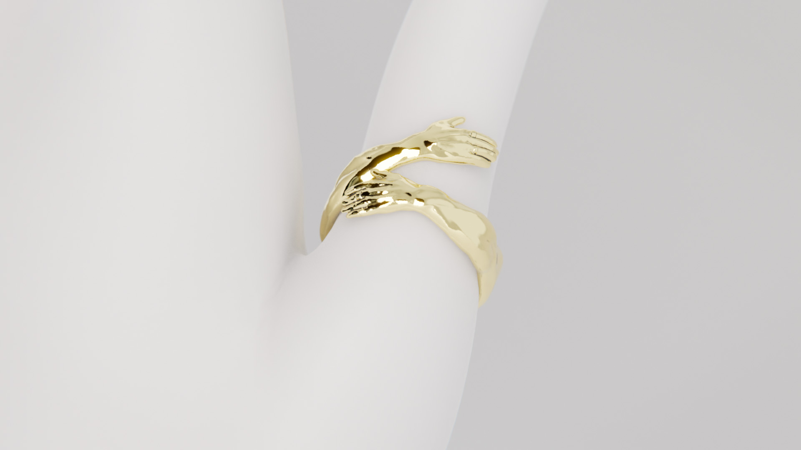
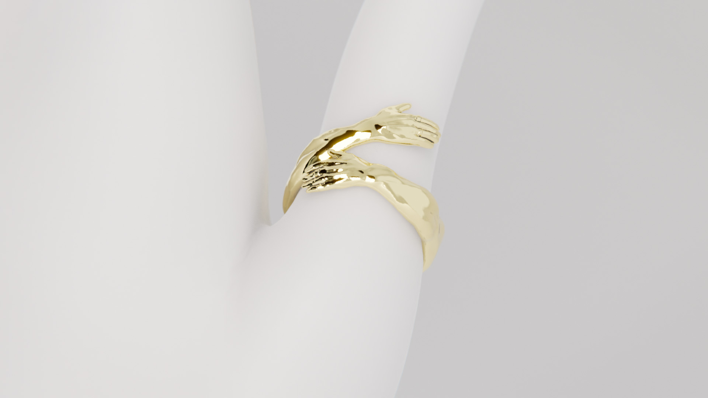

PREFACE
INDUSTRIAL DESIGN PORTFOLIO
Hi, I'm versatile Industrial Designer with a strong focus on hard skills, strategic research and formulating the creative process. I live near Salt Lake City, Utah and my work consists of many projects spanning consumer electronics, soft goods, and jewelry, among other things.
There are an infinite number of ways to wield the creative spark in one's life; music, painting, literature - But creating the implements that we use in our daily life strikes at the core what the human experience is all about for me.
Our environment and the tools we wield shape us. Design changes behavior, and for better or for worse, our philosophy. I'm dedicated to the discovery of things that are honest, useful & beautiful.
This web portfolio presents projects in a primarily visual way. Feel free to inquire If you have questions about the work you see.
If you would like to reach out regarding design services or consultation on a project or retainer basis, navigate to Item Shop,
where you can find a menu of services and other information, or click on one of the links in the sidebar.
© Jacob Malaska >>> Last updated: 02.02.2026
EXPERTISE
- Research for Innovation
- Sketching
- CAD and Sculpture
- Softgoods Design
- 3D Vizualization
- Design For Manufacture
EXPERIENCE
- ID BFA - Brigham Young University
- Industrial Designer - Ooblec
- Design Intern - Skullcandy
- Senior Industrial Designer - Skullcandy
- Founder - Item Shop
- ID Consultation - Shyft Global, Chums & Kizik.
SKDY AVIATOR
VINTAGE REBORN
ABSTRACT
The original Aviator headphones merged vintage Americana with high fashion when they launched in 2010, becoming a statement piece as much as a listening device. Now the Aviator returns, redesigned for a generation that values personal expression, quality craftsmanship, and the rediscovery of past aesthetics. I realized that the lens of what gen z consider to be vintage had shifted a lot. iPods and digital cameras are now antiques. I wanted to rebuild Aviator into something that felt fauxstalgic to a younger demographic, hopefully allowing them to hold something that felt like what they imagined Y2K to be like. High-contrast materials, nods to eyewear construction, and a tactile interface give the product a sense of durability and intention that resonates with consumers seeking investment pieces over disposable electronics.
Circa 2024
Skullcandy
SCOPE OF WORK
- Lead Industrial Design
- Consumer Research & Strategy
- CMF Development
- Acoustic Tuning
CONTRIBUTORS

Fauxstalgia & Vintage Value
Unfortunately, old stuff tends to beat out modern competition when it comes to materials, UI interfaces, and analog experiences (everything lol). I knew that if we just gave the hero feature of the product, ANC, a dedicated physical control, it would improve perception and foster playful engagement with the product a buttload. My memories of Y2K are some of my foggiest, but I tried to dig deep for inspiration to pin down the aesthetic and touchpoint details, and landed on IBM computers, vaporwave, and cyberpunk as fertile ground to plant ideas.


.webp)
.webp)
.webp)
Tech as Accessory
The experience of a product extends beyond the moment it's on your head. How it looks around your neck, how it feels in your bag, whether the case is something you want to keep or chuck in a drawer - these details matter. Aviator treats every touchpoint as an opportunity for expression. The case becomes part of the kit, not packaging to discard.
Tech is fashion now. Headphones sit alongside sunglasses and watches as objects that say something about the wearer before a word is spoken. But alas, no one thought to make the carry case that comes with your headphone into a wearable. This bag was a big part of the story, with detachable straps that can turn it into a fanny pack or cross-body bag, it becomes a utility purse that fits in your life, and can carry all your vape pens and chapstick. The point is, since making this bag, ecosystem design has become a key pillar for us at Skullcandy, and wear-ability is a big factor in the day to day systems we all create.
SKDY MAINLINE
THE CORE LINEUP
ABSTRACT
The Mainline collection here is a sampler of some products I have designed at Skullcandy over the last few years. Each product in this section was designed to deliver on the brand's promise of bold sound and bold style at accessible price points. From flagship earbuds to over-ear staples, Mainline products share a common design language while still being flamboyant in their own way. Earbuds, Headphones, and Charging Cases are all mechanically and anthropometrically challenging things, in totally different ways. I'm happy with what we were able to pull off considering our super tiny teams and timelines.
SCOPE OF WORK
- Industrial Design
- Fit and Acoustic Validation
- Acoustic Tuning
- 3D Visualization
- DFM Revisions
CONTRIBUTORS
Rail ANC
Skullcandy's flagship true wireless earbud. Noise canceling, full voice control, and a design driven by transparency and light - Rail was the company's first smart product, and I wanted to emphasize that by letting our users see the tech through the backside of the bud, while keeping the front casual.


Hesh
A long-standing pillar of the Skullcandy over-ear range. Hesh delivers full, immersive sound in a form that has evolved across multiple generations of design. I'm particularly happy with the sliders, which when moved, slide open to reveal more comfy fabric and head room. It solves for a common problem that headphones have, looking good in renders, but being disjointed and broken looking when articulated.
.webp)
.webp)
.webp)
.webp)
Icon 180
A budget over-ear headphone balancing refined aesthetics with serious value engineering. This product approaches the theoretical limit for part count of a headphone. Showing the guts is kind of a pillar for us lately, but this headphone allows you to see the front and back of its tool injected parts. No covers, just very curated ribbing. IYKYK.


Sesh ANC Active
A sporty bud with a buff and fast shape, Sesh was where we were able to create a really comfy secure fit for an unusually large set of drivers and batteries. Some rubberized parts and cordage loops gave it the ability to hold on to you in active scenarios.


SKDY GAMING
MADE TO PLAY
ABSTRACT
The gaming lineup was to consist of three sibling products and big daddy crusher headphone. We knew from the get go that all four headphones had to have uncompromisingly great comfort, audio quality and comms. We were deterred by the RGB ridden alien spaceship inspired headphones flooding the market, and instead looked back at retro gaming console hardware for inspiration (the Playstation and Nintendo consoles of the 90's were classicly modern and timeless designs). Gaming presented a lot of firsts for our small Design Team. Boom microphones, suspension headbands and an alternate camber-yolk architecture were all things we knew we wanted, but had to build and test mid development before we were satisfied. The resulting design was a suite of products that could be spun in either a futuristic or nostalgic CMF easily. The whole family boasted extra large 50mm drivers and exceptional comfort and the same quality boom mic. The entire left ear cup can be 'bopped' for easy mute functionality, and the higher priced point products sported more customization and connectivity options.
Circa 08.01.2022
Skullcandy
SCOPE OF WORK
- Industrial Design
- DFM revisions
CONTRIBUTORS
Crusher Gaming
This headphone honestly still blows me away to think about. It's the first of its kind, fully open backed headphone, but with Skullcandy's Crusher drivers to compensate for the lack of bass that defines open backs. It's honestly the best headphone ever made, for audiophiles and gamers alike. We wanted to show off Crusher, and the best way was to lean into a giant adjustment wheel and perforated venting, giving a subtle peak to the headphone's inner workings and massive bass coils.


Baseline Gaming Lineup
The foundation of Skullcandy's gaming range - three sibling products built around exceptional comfort, 50mm drivers, and a shared boom mic architecture. Inspired by the clean lines of 90's console hardware rather than the RGB-laden aesthetic dominating the market.


RONIN BIKE
FUTURE COMMUTER
ABSTRACT
Having spent two years in Japan, I became very well aquainted with the Mamachari - The category of cheap, abundant basic bicycles used by grandmothers and business men alike. The bikes themselves were utilitarian, maybe a bit heavy, but comfortable and affordable. Unfortunately these bikes have a short life expectancy in the hot humid country, and their over production and cheap perception fueled a negative cycle of abuse and misuse. After see so many poor rusty bikes chained to railings for eternity, I wanted to design the antithesis. A Bicycle designed for commuting that would withstand abuse. "Ronin" features an in frame battery, rear mounted motor, tubeless tires, and a sealed drive shaft instead of a chain. Safety features and everything else you would want are all tightly integrated into the sillhouette of a road bike.
Circa 11.01.2020
Personal
SCOPE OF WORK
- Sketching
- Modeled in Blender


RINGS
TRISTEN IKAIKA
ABSTRACT
In collaboration with Shyft Global and their client Tristen Ikaika, I was able to build a catalouge of ring designs with a wide variety of motiffs for the Ikaika brand. The designs we wanted to achieve were outside of the scope for software like solidworks or AutoCAD. Having made my wife's engagement ring, I understood some of the constraints surrounding casting precious metals. Blender's open-source sculpture interface was a powerful tool to take the gestural shapes and fine details we wanted all the way to prodcution and sale. The first rings were floral rose designs, moving on to animals and other abstractions, finally ending on several figurative subjects where sculpting things like hands, faces and arms in relief around a circular band proved to be a fun artistic challenge.
Circa 11.01.2020
Shyft Global
SCOPE OF WORK
- Digital Sculpture in Blender
- Design for Casting
- Production Coordination
CONTRIBUTORS

 



100
MINIMALISM, MAXIMISED
ABSTRACT
What if one person was to design everything they used to work together as a collection? 100 is an attempt to design each of the objects most commonly found in the American home. As a student, the objective of this project was three-fold.
1. Design common objects in a way that allows them to work together as a cohesive whole while eliminating redundancy and clutter in the home.
2. Give a commentary on the Global epidemic of overconsumption as well as a compelling and finite alternative.
3. Gain a more comprehensive perspective and skill set as an Industrial Designer - Even regarding the "mundane" items that we all possess.
2017 -2018
Senior Thesis
Link to full project on Behance
SCOPE OF WORK
- Research and discourse
- Industrial Design
- Pattern Making / Sewing
- Furniture Making
- Final Booklet and Renders
A Multitool & Knife


A Flexible Jumpsuit

A Modular Razor


An Arc Lighter

A 2MM Graphite Pencil

A Compass, Ruler, Level and Straight Edge

A Compatible Cup, Bottle And Pitcher, on a Blender

A Modular Furniture System


A Durable Fastener

ARCHIVE
SKILLS SHOWCASE


ABOUT
I live in Utah Valley with my wife and 4 children. Besides design I like to rollerblade, paint, play Street Fighter and develope my video game Doom Trail. Hope you enjoyed the work you saw. Get in touch if you want to see more.
>>> Last updated: 02.02.2026